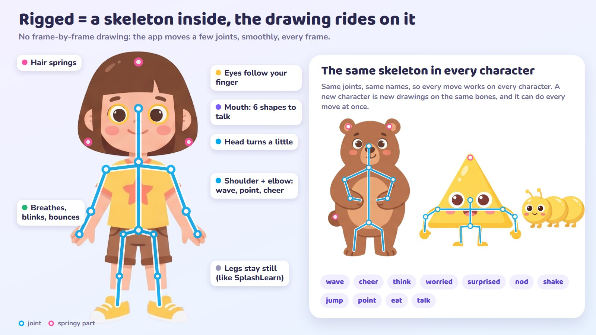
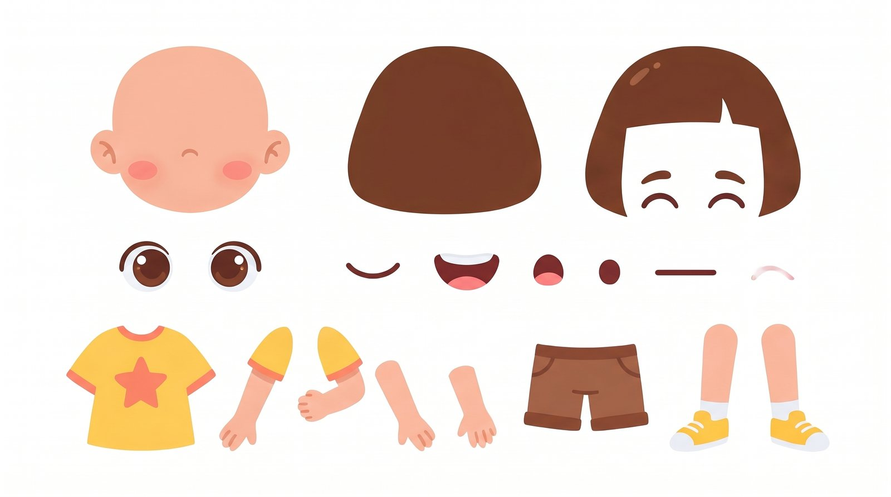
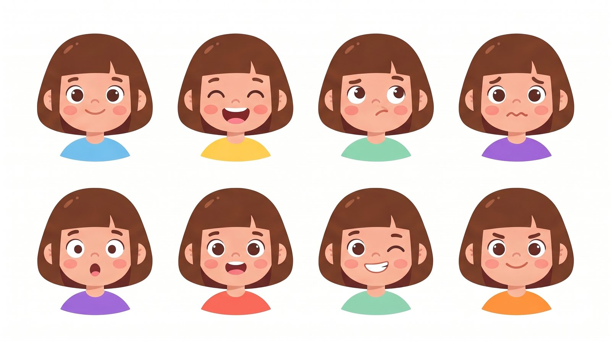
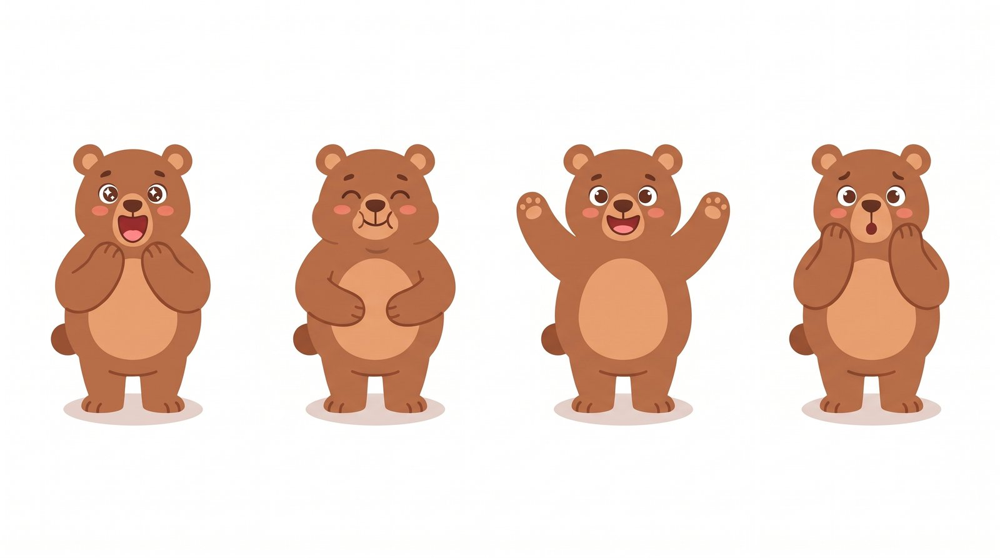
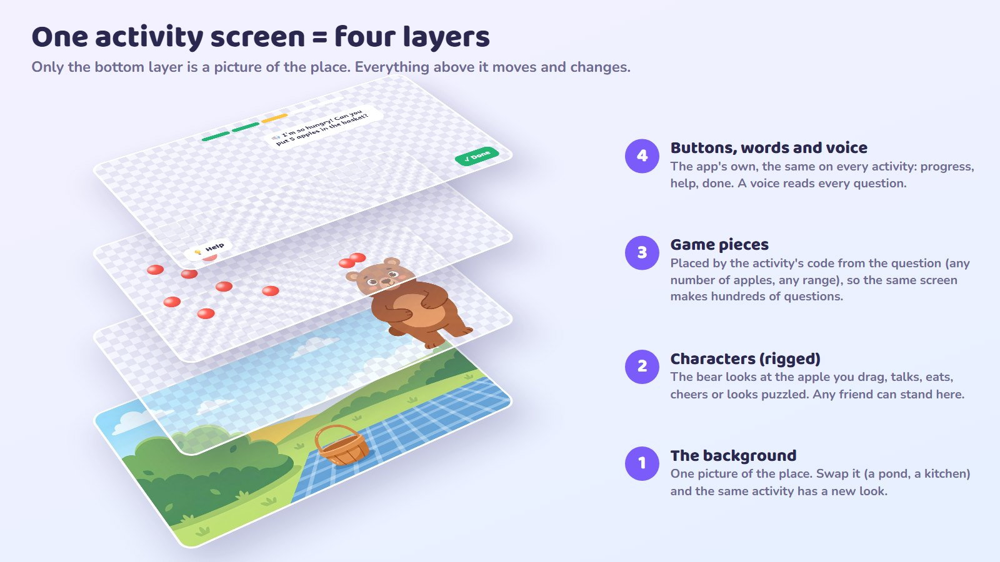
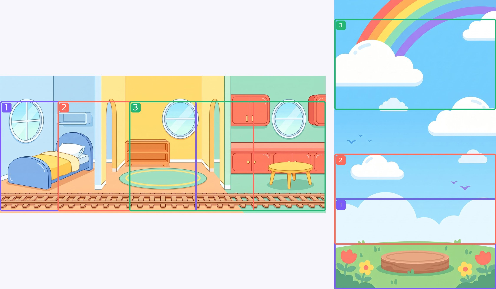

How it works: the technical side
You asked to keep the technical side separate. This page is for whoever builds the app: how the characters move, which tool makes them, how a screen is put together, how scenes move, and the timings that keep play quick. The plan itself stays in plain words.
Rigged characters: easy to animate
A character whose legs stay still while its eyes follow your finger and its hands and mouth move a little is a rigged character. The drawing is cut into parts (head, eyes, mouth, arms, legs) and the app moves a few joints smoothly every frame. There is no frame-by-frame drawing, so the files stay small.




| Always on (the "alive" layer) | Moves the activities ask for | Talking |
|---|---|---|
| Breathing, blinking, eyes and head following the finger, hair, ears and tails that spring, a small sway. Legs stay put. | The activity code says play('cheer'), mood('worried'), lookAt(apple). The same call works on every character. |
The mouth follows the voice. Duolingo does exactly this with Rive: the timing of the words comes with the sound. |
Living shapes: limbs only while moving
Your note on Shape Builders ("when put into places the arm and legs should be retracted so its not strange") became a rule for every living shape. A shape is three kinds of parts: its exact body (so sides and corners can be counted), a face, and arms and legs. While it waits or once it is placed, the arms and legs are tucked away. To walk, hop, catch or cheer, they slide out. Riding in a wagon or a basket, only the arms come out.

docs/plan/the-plan/mock/fun.js,
living()): a body, a face that can move and shrink (out of the way of a window or a door), and limbs with poses.
When a shape is turned (a square standing on a corner), only its body turns: the face and the limbs stay upright. A rig in Rive
or Spine does the same with a "limbs" input and a scale or slide on the limb bones.Three ways to build the rigs
| Rive my pick | Spine | Our own code rig | |
|---|---|---|---|
| What it is | An editor made for interactive characters. A "state machine" switches moods and moves; eyes following the pointer is built in. | The classic tool for game characters, made from pictures. Its "skins" are made for mix-and-match outfits. | Parts as SVG drawings and a small skeleton written in code (the living shapes on this page already work this way). |
| Who animates | An animator (freelance) or you, in the editor. Rive also has an AI helper in the editor. | An animator. | Me, in code, with no special editor. |
| Dress-up | One picture per slot (hat, top, shoes), swapped from the app. | Skins: excellent. | Slots in code; colours can change freely (skin, hair, clothes). |
| Runs on | Web, iPhone, Android, Flutter, React Native, Unity. Free, open-source players. | Most game engines and the web. | Web (and phone apps through it). |
| Cost | $9 per editor seat a month to export without Rive's splash screen. No fees for the app. | $69 or $369 once per person, and a licence is needed to ship. | Free. We maintain it ourselves. |
| Best for | The best-looking motion with the least code. | Big games with many outfits. | Doing everything with AI and no animator. |
Checked 13 Oct: rive.app/pricing (Free exports show a splash, Cadet $9/seat/month, Voyager $32), Rive's docs on pointer listeners and image data binding, esotericsoftware.com (Spine $69 Essential, $369 Professional, per person), Duolingo's blog on its Rive lip-sync.
Four layers, and only one is a picture

An engine is one way of playing (count out, join and split, sort, trace…). An activity is an engine plus its numbers plus one of the skill's five steps, with a friend and a scene to give it a look. There are 42 engines, and each has a scene that moves (the table is on the plan page).
The test robot. Every engine has a robot that plays every activity the way a child would: it works the answer out from the question (never from the app's own answer), makes the planned mistakes on purpose to check each tip, and checks where every move landed.
Wide and tall worlds, and a camera
A scene is a picture bigger than the screen: very wide (21:9) for sideways journeys, or very tall (9:16) for climbs and dives. The screen is a window onto it. Everything placed in the scene (friends, things, shapes) is placed in the scene's own coordinates, so the window can slide without anything moving out of place.

| Move | When | Activities |
|---|---|---|
| Sideways | Successive orders, rooms, crossings or deliveries. | Pancake Café, Tidy-Up Train, Caterpillar Bridges |
| Up (or down) | Something growing or climbing; going deeper. | Shape Builders, Balloon Tower, Firework Numbers, the Dive |
| None | Comparisons, arrays, fractions, scales, clocks, grids and written work: everything needed must stay in view. | Owl's Fraction Race, Fact Flow's question area |
Rules: the view moves only after a round is finished, in 0.6–0.9 seconds; finished work stays in the world (a tidy room stays tidy); the next part of the scene already holds its task (it never arrives empty); the finale shows the whole thing at once.
Keeping play quick
| What | How long |
|---|---|
| Anything moves after a tap or a drop | within 0.1 s |
| A pancake flips; a shape hops or catches | 0.4–0.8 s |
| A reward movement at the end of a round (eat, toot, lift off) | 1–2 s |
| A counted show (fireworks, balls counting themselves) | up to 4 s |
| The view sliding to the next part | 0.6–0.9 s |
| A round of play | 18–26 s |
| An activity (5 rounds) | 90–150 s |
| The finale, then Continue | 2–3 s |
| Fact Flow: one boost | 0.25 s |
Proposals, not measured: to be checked with children. Taps made during an animation are queued, never lost.
What the scenes add to the work
| First pilot | Pilot + tracing | Everything | |
|---|---|---|---|
| Engines | 12 | 13 | 42 |
| Activities | 250 | 270 | 2,815 |
| Background pictures | 10 | 11 | 16 |
| Drawn things (props) | 44 | 45 | 84 |
| Character moves and moods | 15 | 15 | 18 |
| Voice lines (per language) | 337 | 359 | 1,390 |
| Daily card designs | 31 | 31 | 31 |
Estimates to revise after two scenes are built and tried with children. Scenes are shared: a café serves five engines, a garden several, a workshop most of the tools. Numbers, dots, bars and grids are drawn by code and are not counted as props.